在开始进行 Linux 之前，应该有很多的工作要做的！最重要的就如同前面『Linux 主机规划』当中说的，要如何规划硬盘呢？！到底要如何分割硬盘才好！是要将 swap （虚拟内存）规划的大一点比较好？或者是只要一个根目录就可以了呢？另外，如果我的硬盘上面已经有 Windows 系统，我又不想要将 Windows 杀掉，想使用多重开机来安装我的多个操作系统，那要怎么做呢？！况且，由于 DOS 的 fdisk 不认识 Linux 的档案格式，那么我要如何将 Linux 完全的从我的硬盘中移除呢？！呵呵！这里就来说一下该如何是好吧！
由于不同的操作系统所使用的档案架构并不相同，有些甚至是不兼容的，例如 Windows 所使用的是 FAT 表，而 Linux 所使用的是 ext2 这个档案格式，这两种格式完全不相同，在 Linux 底下还可以藉由编辑核心来支持 Windows 的 FAT 档案格式，但是 Windows 则完全无法读取 Linux 的档案格式了！此外， Windows 使用的磁盘分割工具 fdisk ，很抱歉的，并不认识 Linux 的 ext2 这个档案格式，所以如果您有一棵已经安装有 Linux 系统的硬盘，呵呵，使用 Windows 的 fdisk 是完全无法分割这块硬盘的！
那么到底什么是硬盘分割呢？真的要将硬盘用刀子割一割吗？！不是这样的，实际上，硬盘是以 blocks, clusters, partitions 这些东西来作为储存的单位，而最底层的硬盘单位就是 blocks 了，通常一个 blocks 大约是 512 bytes 左右。那么 partition 是什么？简单的来说，你知道你的 Windows 有所谓的 C:, D: 是吧！其实他们是同一颗硬盘，只是利用『磁盘分割表』(partition table)来将实体的硬盘规划出不同的区块。举个例子说，假设你的硬盘总共有 1024 个 clusters （利用 blocks 结合而成的硬盘计算单位），那么你在这块硬盘的文件头地方（就是磁盘分割表，可以想成要读取一块硬盘时最先读取的地方）如果写入你的 partitions 共有两块，一块是 primary 一块是 extended ，而且 extended 也只规划成一个 logical ，那么你的硬盘就是只有两个槽啦（对于系统来说，真正能使用的有 Primary 与 Logical 的扇区， Extended 并无法直接使用的！需要再加以规划成为 Logical 才行！ ) ，而且在 partition table 也会记录 primary 是由『第 n1 个 cluster 到第 n2 个 cluster 』，所以，这样子一来，当系统要去读取 primary （就是 c 槽）的时后，就只会在！n1~n2 之间的实体硬盘当中活动！
基本上， Windows 98 系统中的 Fdisk 这支程序仅支持一个 primary 与一个 extended ，其中， extended 可以再细分成多个 logical 的硬盘槽。NT 很抱歉，小弟不熟，所以就不提了！那么 Linux 呢？嗯！基本上最多可以有 4 个 primary 的硬盘，而可以支持到 3 个 primary 与一个 extended ，其中， extended 若再细分成 logical 的话，则全部 primary + extended + logical 应该可以支持到 64 个之多。底下我们将以 spfdisk 这个全中文接口的 fdisk 磁盘分割工具来介绍如何分割硬盘！
SPFdisk 是一套由国人开发完成的全中文接口的硬盘分割工具，他要比微软出的 Fdisk 功能强多了，他的好处除了==>全中文接口让你一定可以看的懂之外，简单的类图形接口可以让你轻易的进行硬盘分割，除此之外，这套软件的『DOS工具』内的『格式化工具』格式化硬盘的速度真是 DOS 比不上的，我格式化一个 30GB 的硬盘不用十秒就可以格式化完全！<==另外，其它的优点我在此也不多说了，若有需要你可以自行自一些搜寻网站下载最新的程序，或从这里下载我有的程序，不过可能旧一点。
另外，由于 DOS 的 Fdisk 并不认识 Linux 的分割表，所以用 DOS 的 Fdisk 是无法将 Linux 的分割表去除的。因此，你要删除 Linux 的分割表，只有两个比较快的方法，一个是以 Linux 直接再分割，一个则是使用 SPfdisk 分割啦！
由于这个页面的档案很大，有时候会有没办法显示的情况发生，这时请在画面上『按鼠标右键』，再选择『显示图片』这个选项，即可显示画面啦！
硬盘分割主要可分为下面几个步骤：
1. 删除原有分割：假设你的主机中没有任何系统存在，则请以 Windows98 制作开机片后，将 spfdisk 拷贝至开机片。以此磁盘开机之后，执行：
A:>spfdisk 会出现如下欢迎画面。
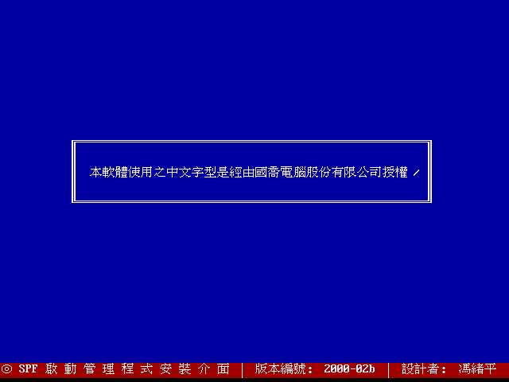 按任意键后出现下面画面：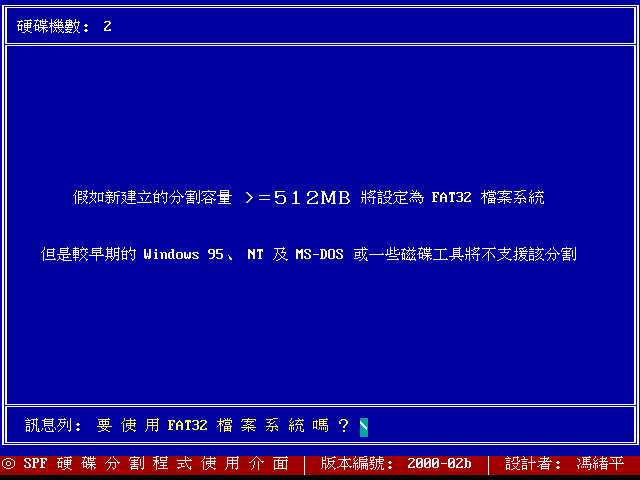 这是向你询问是否需要使用 FAT32 的档案系统，由于 Windows 98 支持的长文件名及相关的档案型态是以 FAT32 为准，所以当然按『Y』！按了 Y 之后会出现硬盘的信息，如下所示：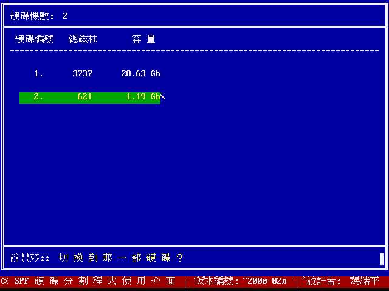 因为我是在我原有的机器上执行这个程序，所以会有两颗硬盘，如果你的系统只有一颗硬盘的话，则只会显示你有的硬盘数据，在上图中，1.19GB 的硬盘其总磁柱仅有 621 单位，比可开机扇区范围（0 ~ 1023）小得多，所以可以随意分割。将光标以方向键移动至 1.19GB 这颗硬盘后，按 Enter ：将光标以方向键移动至这个扇区后，按 Enter ：
- 启动：由于系统开机时会去先去找分割表，由分割表所设定的『可开机扇区』进行开机程序，因此若这个扇区为开机扇区，则『启动』项目会有一个心型的符号存在！
- 起始磁柱与结束磁柱：这一个被分割的扇区的开始与结束扇区。
- MBytes：这个扇区的硬盘容量。
- 系统 ID 与系统种类：这一个分割表的类型。因为这是 Linux 的分割类型，所以其 ID 显示为 83，若是 FAT32 的话，则为 0b。
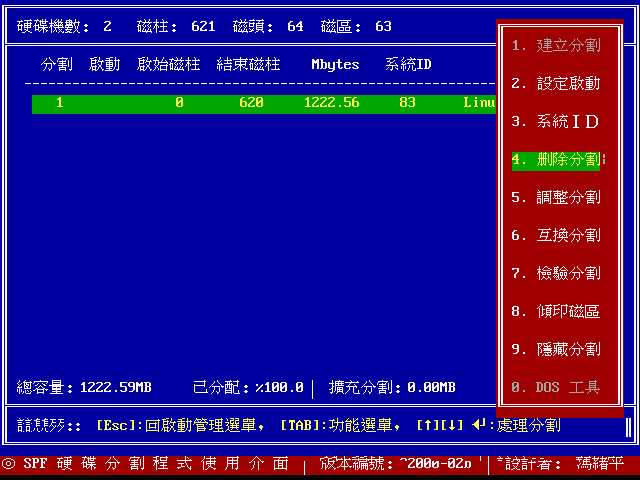 在这个画面中，将光标以方向键移动至『删除分割』这个项目，并按下 Enter ：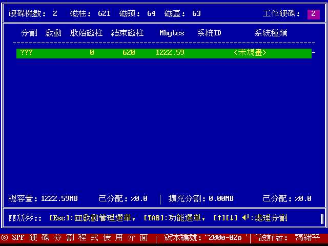 删除分割之后你的硬盘中就没有分割表的存在了，所以这个硬盘的系统种类则变成了<未规划>。2. 建立主要分割扇区：在上面的画面中，按下 Enter 键，会出现下面画面。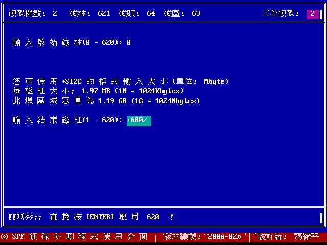 由于你选择了『不要配置整个区域为一块扇区』，所以这时程序要你输入你所需要的扇区。通常在第一步是输入『启始磁柱』，这时只要按 Enter 就可以啦，然后会要你输入『结束磁柱』，结束磁柱的输入方法有两种模式，一种是输入磁柱区，一种是输入你所需要的 MB 数，通常我是输入 MB 数啦，例如如上所示，我所需要的空间大小是 600MB ，所以输入『+600』即可，而如果你的硬盘很大，你要输入 4GB 时，则需要输入 『+4000』，以此类推！输入『+600』并按 Enter 之后出现如下画面。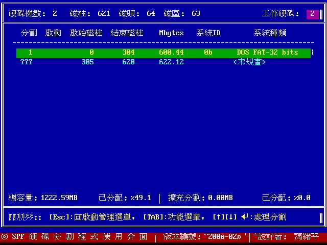 这时出现了你刚刚划分的硬盘信息啦，由于我们是划分为 DOS 分割区，所以系统种类是 FAT-32 ，而 ID 则为 0b 。至于另外尚未划分的就会显示为 <未规划> 啦！如果你还需要再继续划分的话，这时将光标移动至 <未规划> 的那一个扇区按 Enter 后选择『扩充分割』即可继续划分。如果划分完毕之后，当然就是贮存分割表。这里注意一下，因为刚刚的动作均尚未完成贮存的工作，所以要反悔还来得及！3. 贮存分割表：接下来要做贮存的动作了，按下『Esc』键（键盘左上角那个键）后会出现如下画面：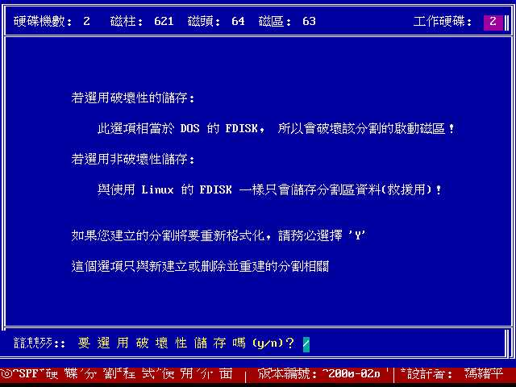
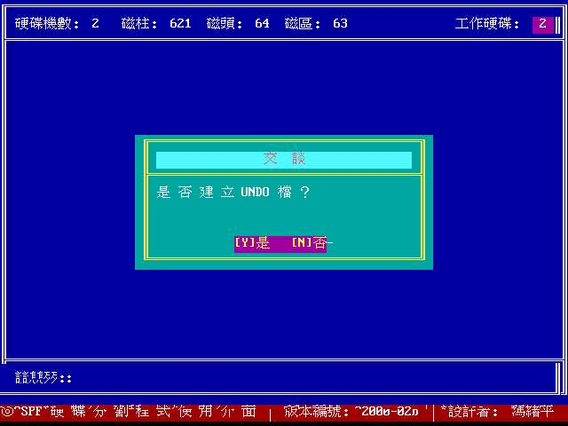
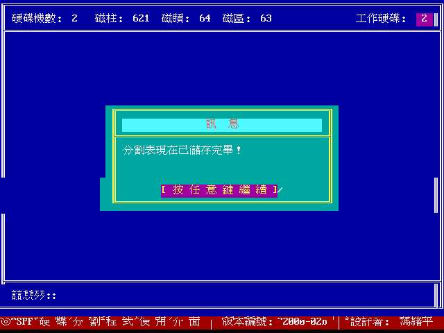
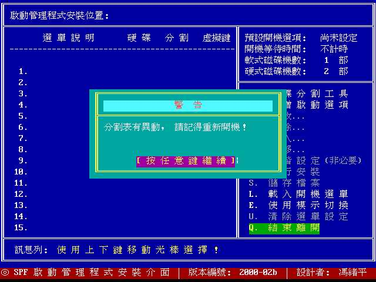
这里的动作是连续的：4. 格式化硬盘这样一来你的硬盘就划分完毕而且贮存啦！这时要做的就是重新开机并格式化硬盘。格式化硬盘可以使用 DOS 的 Format ，当然也可以使用 spfdisk 的内建功能喔！
- 程序会先跟你确认你的硬盘有没有错误，这里还可以反悔。
- 然后程序会问你是否需要使用破坏贮存，一般来说是需要使用『破坏贮存』的，因为需要将你的硬盘划分完全啦！所以要按 [Y]；
- 为了可以让你以后回复分割情况，所以你可以选择 『建立 UNDO』档，所谓的 UNDO 文件即是记录你之前硬盘分割表信息的档案啦。
再进入刚刚你划分完毕的那个硬盘区，按下 Enter 之后会出现一串选单，然后最下方的选单为『DOS 工具』，选择这一项并按 Enter 后，会出现另一个选单：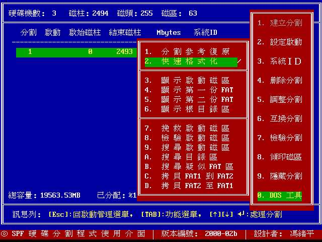